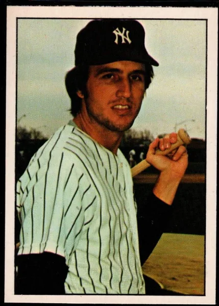

Jim Mason
Career Highlights & Facts
(Facts are AI-generated and may require verification)
- Achieved a rare feat by hitting a home run in the only World Series plate appearance of a career.
- Tied a major-league record by hitting 4 doubles in a single game.
- Started a triple play and hit an inside-the-park home run in the same game during a minor-league season.
Would you like to find out more about Jim Mason?
Player Biography
Jim Mason January 4, 2012 / in BioProject - Person 1972 Texas Rangers / by admin This article was written by Steve West Confidence was a word used a lot in reference to Jim Mason. When he played well – which was rare – it was because he had his confidence. When he struggled, it was because he’d lost it. Dick Young said he was “a big guy with a small tolerance for pressure,” 1 and that may explain why, in an era known for bad players, Mason was one of the worst, a below-replacement-level player for his career. James Percy Mason was born on August 14, 1950, in Mobile, Alabama. He was one of seven children (four girls, three boys) of Myril (pronounced Merle) and Patricia Mason. Myril worked for the Louisville & Nashville Railroad. As a child Jim was a baseball fan, and later related his admiration for Mickey Mantle . “Mickey was a favorite of mine when I was a kid,” he said, “and I’ve always wanted to meet him. I sorta did meet him once but that was when I was 2 years old. The Yankees played an exhibition game in Mobile and I got his autograph.” 2 Mason attended Murphy High School in Mobile, playing baseball, football, and basketball. He also played in the Mobile Babe Ruth league, coached by his father. The team was the state champion in 1965 and 1966, and went to the Babe Ruth World Series in 1965. In 1966 Mason pitched the state championship game, throwing a two-hit shutout with nine strikeouts. Shortly after graduating from high school, Mason was drafted by the Washington Senators in the second round (28th overall) of the June 1968 draft. He briefly attended the University of Southern Alabama but had already switched his focus to baseball. Mason began his career with Geneva of the New York-Penn League in 1968. The everyday shortstop, he hit just .217, although his 33 walks led the team and he showed good work with the glove. It was perhaps the glove the Senators were thinking of in the spring of 1969 when, with the threat of a players strike looming, they brought seven minor leaguers to the major-league camp, Mason among them. The strike did not materialize, but Mason took advantage of the exposure. He started the spring going 7-for-17, attracting a lot of attention. “When I came here I didn’t think I’d do this well, because on television it looks like those pitchers throw so much harder,” he said. 3 Manager Ted Williams was more enthusiastic, predicting that Mason would be a regular in the majors in three years. “Can’t miss,” said Ted. 4 Mason was a shy but popular young man who Williams said reminded him of former Senators star Cecil Travis . For his part, Mason was awed just being around the Hall of Famer. In his deep Alabama drawl, according to one reporter, he remembered seeing Williams on television. “Ah reckon I was 9 or 10 years old. Ah thought he was the greatest ballplayer who ever lived. And as for playing for him, who would ever dream that?” 5 With no room for him, since there was no strike, and having performed so well in the spring, the Senators ticketed Mason for Triple-A Buffalo, where at 18 he was one of the youngest players in the league. He struggled, but military commitments due to the Vietnam War meant that he played in only 35 games, missing most of the second half of the season. Even so, owner Bob Short thought Mason should start in the majors in 1970, but listened when Williams told him that Mason wasn’t ready. 6 Sent back to Triple A, now in Denver, he did better, hitting .241, but his reputation with the glove suffered as he made 48 errors. His season highlight came in a game on September 1 when he both started a triple play and hit an inside-the-park home run. At the end of the 1970 season the Senators invited Mason to the Florida Instructional League, but he declined. Instead, the Senators decided to take their Double-A shortstop, Toby Harrah , who accepted the invite. General manager Joe Burke said, “We invite the players we want and give them an opportunity to develop faster.” 7 The decision appeared to harm Mason’s chances, especially when, just a few weeks later, the Senators traded their third baseman, Aurelio Rodriguez , and shortstop, Ed Brinkman , to the Detroit Tigers in return for pitcher Denny McLain . With the left side of the infield wide open, Mason might have had his shot, but he was beaten out by Harrah, who had impressed the Senators with his performance in the instructional league. Even so, Harrah still felt the more advanced Mason would get the job. 8 Mason also tried to play at third base, but unsuccessfully. He made four errors in one game at third (and still won the game with a home run in the 13th inning). “Ah’m just not a third baseman,” he drawled. 9 Mason felt that the team had made the decision before camp even opened. “I really didn’t get a chance. It was apparent they had their minds made up,” he said. 10 Frustrated when he was sent down, he threatened to quit and go back to college, but quickly changed his mind and reported to Denver once more. 11 He tried to put a positive spin on things. “I’m determined to show them I can play ball. I’m just going to give it all I’ve got and the future will take care of itself,” he said. “He’s got the right spirit and the future looks bright,” Denver manager Del Wilber said. 12 Mason did much better this time in Denver, hitting .268, drawing 77 walks, and making just 23 errors. “You try to get to the point where you throw that ball over there and not even think about it,” he said of his improvement on defense. 13 The team did very well, too, winning the American Association championship before losing the Junior World Series to Rochester. Mason earned a reward, being called up to the Senators for the end of the season. He made his major-league debut in Fenway Park against the Boston Red Sox on September 26, going 0-for-3 with a walk. Two days later he got his first hit, at home off the New York Yankees’ Stan Bahnsen , and the following day added two hits off Mel Stottlemyre to end his first big-league season 3-for-9. Talking about having been sent back to Denver in 1971, Mason thought the demotion had helped him: “Going back there may have been the best thing that could have happened to me.” He said he learned more than he thought he would. 14 For spring training in 1972, he was more circumspect. “This year I’m going to Florida with the idea that there are 10 people fighting for that job and I’m just one of them.” 15 This time he did better, while Harrah spent much of the spring hurt. “Mason is looking better every day, but maybe I wouldn’t feel that way if Harrah had been playing,” said Williams. 16 Indeed, when the season began Harrah was in Arlington with the newly moved Texas Rangers, and Mason was on his way back to Denver. He hit .272 there, and was called up in late July, staying in the majors for good this time. He played most of the games for the rest of the season, including 10 appearances at third base. He struggled at the plate, hitting just .197. Mason made the team out of spring training in 1973, but as Harrah’s backup. In May the team switched Harrah to third and made Mason the starting shortstop. He was hitting well early, over .300 as late as June 9, but he went into a slump, hitting just .141 the rest of the season, and lost his starting job in July. “I wasn’t playing and lost interest,” he said. “If you don’t play every day, you can’t psych yourself up for when you do play. I wound up playing once a week usually and I guess showed that I was dissatisfied.” 17 With Harrah saying he preferred to play shortstop, the team had to choose between the two players, and they did. In December they sold Mason to the Yankees for $100,000. “It’s kinda hard to price yourself, but I think $100,000 is a lot of money to anybody,” he said. 18 The Yankees needed someone to compete with Gene Michael at short. They had tried to trade for the Phillies’ Larry Bowa , but when they couldn’t get him, Mason was the best available. “I don’t think they would have paid that much money if they didn’t want me to play,” he said. 19 Mason won the starting position in the spring, and stayed there all year. Given the opportunity to play every day, he put up the best numbers of his career. He started slowly but things began to pick up. “He’s doing much better than he did in the beginning of the season,” Michael said. 20 In 152 games he hit .250 with five home runs. He even got some payback against his old team when on July 8 he hit four doubles against the Rangers, tying a major-league record. Mason knew why he was performing so well. “I’ve got my confidence,” he said. 21 The 1975 season turned into a nightmare, though. Although he said, “I’m not the kind of guy who needs to be pushed to do my best. I’ll push myself,” 22 whatever pushing he did was in the wrong direction. His bat disappeared; he hit just .152. The Yankees sporadically tried others at short, but it wasn’t until late July that Mason lost the job for good. At that point sportswriter Young called him “a big guy with a small tolerance for pressure,” and it seemed to be true. 23 Any time things went wrong, or he felt he didn’t have the full confidence of the team or manager, his performance disappeared. “I completely lost my confidence last year. I got to the point where I didn’t want the ball to come at me. If it did, I knew I was going to mess it up,” he said. 24 At the end of 1975, the Yankees’ Triple-A manager, Bobby Cox , needed a shortstop for his Venezuelan winter-league team, and called Mason. “I went down because I wanted to find out if I can still play,” Mason said, and play he did. He hit .356 and fielded well. “He did a terrific job for me,” Cox said. This brought back the confidence in Mason once more, although a year later he said, “I’m not going to play winter ball this year. … All it got me was another year with the Yankees.” 25 Returning to the Yankees in 1976, Mason made his thoughts clear. “I thought I might be thrown in some trade. But I’m here and now I want to play.” 26 Talking about his new-found confidence, he said, “If I make an error, I’m going to forget about it and make sure I don’t make another one.” 27 He spent the first few months platooning with Fred Stanley , but poor performance made manager Billy Martin give Stanley the starting job full-time in July. Mason ended the season hitting just .180, although the Yankees made the playoffs. They beat the Royals three games to two in the ALCS, with Mason making two late-inning defensive appearances, then went to the World Series against the Cincinnati Reds. They were swept in the Series, with Mason getting into three of the four games. In Game Three Mason got the only playoff at-bat of his career, and made the most of it, homering off Reds pitcher Pat Zachry . “He missed with a slider and I was looking for the fastball,” said Mason. “I thought he’d be taking,” said Zachry. 28 Despite hitting the only Yankees home run of the Series, two innings later Mason was removed for a pinch-hitter. He became the 15th player to homer in his first World Series at-bat, and until 2005 was the only player to homer in the only World Series plate appearance of his career. His later reaction may have been to the outcome of the Series: “It was more exciting getting to the World Series than being there.” 29 Billy Martin twice dropped Mason from his teams. When he took over in Texas, Mason lost the shortstop job and was then sold to the Yankees; and when Martin came back to New York, Mason lost the starting job, then spent a season platooning. Mason was mystified as to why. “I never had a cross word with the man. Maybe he just doesn’t like my personality. … If I deserve the job, I’m sure he’ll give it to me.” 30 But Martin didn’t give him anything. After the 1976 season Mason was left exposed in the expansion draft, and the Toronto Blue Jays selected him, 30th overall. Mason looked forward to another opportunity. The Yankees “didn’t tell me anything, but I knew I wouldn’t be going back to New York,” he said. 31 “I just did not have a good year last year. I don’t think I played enough. Last season I’d get rolling and they would throw in a pinch-hitter. I think getting a chance to bat regularly will help restore my confidence.” 32 He did have one regret, though. “The only thing I’ll miss about leaving New York is Catfish Hunter . We became real close friends and ran around together.” 33 Visiting New York with the Blue Jays in April 1977, Mason received cheers from Yankees fans. “The fans have been very nice this week,” he said, perhaps oblivious to the fact that the cheers were ironic, more due to the Yankees’ poor start (they were 2-8 after the first two Toronto games) than anything Mason did. He commented on the difference between the expectations of the two cities. In New York, “the constant getting on you makes you press, even though you’re really putting the pressure on yourself a little bit,” whereas for Toronto, “win or lose, they’re for you, and I hope it stays like that.” 34 Hope or not, the cheers didn’t last long for Mason in Toronto. Hitting .165 in May, he was traded along with pitcher Steve Hargan and cash back to the Rangers, in return for third baseman Roy Howell . “I’m going down there to do the best I can and try to get in the lineup as much as possible,” he said. 35 He spent the rest of 1977 and all of 1978 as a backup to Rangers starter Bert Campaneris . The Rangers inexplicably gave Mason a four-year contract at the end of 1977, given his backup status. They then gave up on him at the end of 1978, trading him to the Montreal Expos for minor-league outfielder Mike Hart . “I’m looking forward to finding out the differences between the American and National Leagues,” he said. On his recent string of moves (four teams in three seasons), he said, “It’s just a change of jobs. It’s pretty interesting moving around and seeing different places.” 36 Perhaps overestimating his worth, when asked about his contract he said, “I feel obligated by the contract I signed, whether or not it is good or bad.” 37 Mason spent 1979 with the Expos as a backup, getting into just 40 games and hitting just .183. Looking to upgrade, in the spring of 1980 the Expos released him. Unable to find another team, he returned home to Mobile. Mason married his hometown sweetheart, Cathy Cassidey, in 1970. Cathy worked as a teacher, and the couple had two daughters. At home he continued to play rec-league baseball, while he and his father were inducted together into the Mobile Youth Baseball Hall of Fame in 1975. This article was published in “ The Team That Couldn’t Hit: The 1972 Texas Rangers” (SABR, 2019), edited by Steve West and Bill Nowlin. Notes 1 Dick Young, “Young Ideas,” The Sporting News , July 19, 1975: 16. 2 Murray Chass, “Mason: New $100,000 Yankee,” New York Times , March 4, 1974: 40. 3 Merrell Whittlesey, “Raw Rookie Mason Is Hit of Ted’s Camp,” Washington Evening Star, March 25, 1969: D1. 4 Merrell Whittlesey, “Short Unfurls Bankroll, Building for Lengthy Reign,” The Sporting News , April 5, 1969: 17. 5 Merrell Whittlesey, “Mason Is on Cloud Nine,” Washington Evening Star , March 11, 1969: D1. 6 Merrell Whittlesey, “Short Just Won’t Stand Still, Seeks More Nat Faces,” The Sporting News , November 21, 1970: 49. 7 Frank Haraway, “Determined Jim Mason Bears Down at Denver,” The Sporting News , May 15, 1971: 35. 8 Merrell Whittlesey, “Two Rookies to Tussle for Nat Shortstop Job,” The Sporting News , December 26, 1970: 40. 9 Merrell Whittlesey, “Ted Keeps ‘Em Guessing on Nat Infield Scramble,” The Sporting News , March 27, 1971: 38. 10 Haraway. 11 Merrell Whittlesey, “Harrah to Learn While on the Job,” Washington Evening Star , March 17, 1971: C9. 12 Haraway. 13 Randy Galloway, “Rookie Jim Mason Typifies Rangers,” The Sporting News , February 26, 1972: 41. 14 Ibid. 15 Ibid. 16 Merle Heryford, “Rangers Make Room for Randle’s Bat,” The Sporting News , April 1, 1972: 44. 17 Chass. 18 Ibid. 19 Ibid. 20 Phil Pepe, “Mason Builds on Confidence and Smashes Yankee Critics,” The Sporting News , August 24, 1974: 7. 21 Ibid. 22 Phil Pepe, “Mason Now Indispensable Man in Yankee Lodge,” The Sporting News , April 12, 1975: 15. 23 Young. 24 Phil Pepe, “Mason Claims Yank Shortstop Job,” The Sporting News , April 3, 1976: 38. 25 Eddie Menton, “Mason Happy with Toronto,” Mobile (Alabama) Press Register, November 6, 1976: C1. 26 Pepe, “Mason Claims Yank Shortstop Job.” 27 Ibid. 28 Lowell Reidenbaugh, “Rookie Zachry, DH Driessen Torpedo Yanks,” The Sporting News , November 6, 1976: 5. 29 Menton. 30 Pepe, “Mason Claims Yank Shortstop Job.” 31 Menton. 32 Neil MacCarl, “New Blue Jays Delighted as Opportunity Knocks,” The Sporting News , November 27, 1976: 61. 33 Menton. 34 Herschel Nissenson (Associated Press), “Jim Mason Isn’t Bothered by Jeers: He’s Blue Jay Now,” Mobile Press Register , April 21, 1977: G1. 35 Dave Reichart, “Mason Confident with Rangers,” Mobile Press Register , February 19, 1978: E1. 36 Eddie Menton, “Traded Jim Mason Looks Ahead to NL as Montreal Expo,” Mobile Press Register, December 9, 1978: B1. 37 Ibid. Full Name James Percy Mason Born August 14, 1950 at Mobile, AL (USA) Stats Baseball Reference Retrosheet If you can help us improve this player’s biography, contact us . Tags 1972 Texas Rangers Share this entry Share on Facebook Share on X Share on LinkedIn Share on Reddit Share by Mail
Career Totals
| WAR | AB | H | HR | BA | R | RBI | SB | OBP | SLG | OPS | OPS+ |
|---|---|---|---|---|---|---|---|---|---|---|---|
| -1.6 | 1584 | 322 | 12 | .203 | 140 | 114 | 2 | .259 | .275 | .534 | 54 |
Statistics via Baseball-Reference.com
The Original Clue